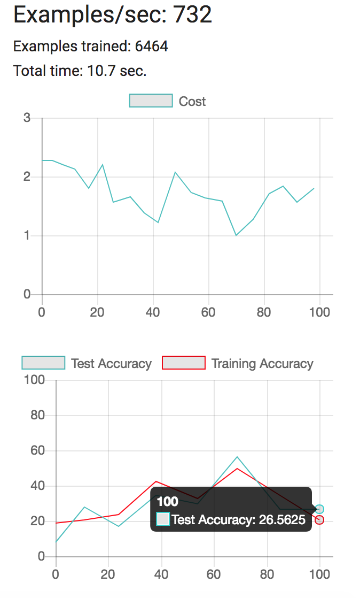
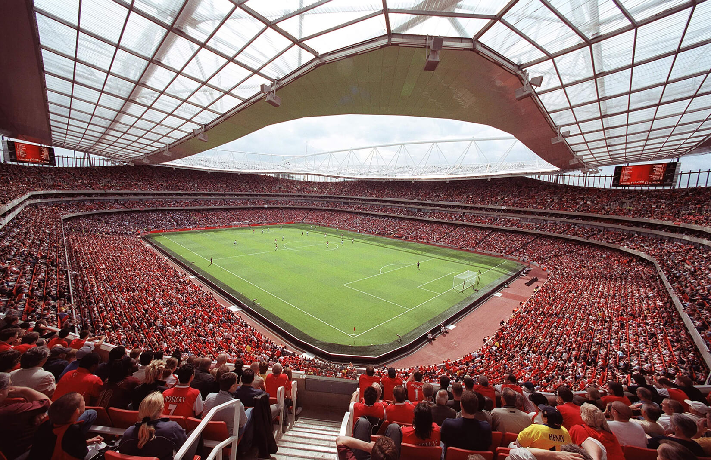

Name: Binh Le
E-mail: binhle@mit.edu
Other Assignments:
The model is invalid because the shape of the data does not flow through the network. The dimensions are not able to be passed from layer to layer. This means that the dimensions outputted by some layers are not equivalent to the dimensions inputted into a following layer.
Since the values of W and b are randomly chosen, there is a high probability that the classifications are wrong and this is exactly what we observe with the initial model. Once we train the data and optimize the values for W and b, the model's accuracy will greatly improved with more training data.
What accuracy do you observe in training MNIST?: 89.065%. How many inferences per second does the demo perform?: 1460/sec. How many examples per second does it train?: 1230/sec.
What accuracy do you observe in training Fashion MNIST?: 73.4375%. How many inferences per second does the demo perform?: 815/sec. How many examples per second does it train?: 663/sec.
What accuracy do you observe in training CIFAR-10 after letting it train for a minute or two?: 28.125%.
Start training and you should see the accuracy plummet to zero, with terrible results. What’s going on?: Model builder is unable to compute due to numerical problems as seen by the NaN responses. Adding two fully connected layers is also essentially the same as using a single FC layer becaused the weights are just scaled linearly.
Train the new model. How well does it perform?: Accuracy goes up to 26.56. Then make the first FC model wider by increasing the number of units to 100. Does this make a difference?: Yes, accuracy goes up significantly to 84.75 after making the number of units 100.
1. Train your MNIST model with 1,2,3,4, and 5 FC layers, with ReLU between them. For each, use the same hyperparameters, and the same number of hidden units (except for the last layer). What were the training times and accuracy? Do you see any overfitting? What can you conclude about how many layers to use?: All of the models were trained for about 10 seconds. Using 1 FC layer produced the highest accuracy in this case with a 87.5% test accuracy. There was also some evidence of overfitting as the number of layers increased as seen by the higher training accuracy compared to test accuracy and the number of times the graphed lines overlapped. However, we may see even more evidence if the training times were longer. Overall, the accuracy generally decreased as we added more layers and the number of examples trained per second also decreased as the number of layers increased.
2. Build a model with 3 FC layers, with ReLU between them. Try making the first layer wide and the second narrow, and vice versa, using the same hyperparameters as before. Which performs better? Why do you think this is?: Using a wide first layer followed by a narrow second layer works the best as seen by the higher 78.125% accuracy. When the number of units in a layer is decreased, there are less nodes being used to adjust and optimize the weights of the neural net. Therefore, the output of a narrow layer would have greater error. This eventually feeds into a wide layer but it can only do so much to fix the error. However, when a wide layer is first, the narrow layer is able to further optimize.
With 1 FC Layer.
With 2 FC Layer.
With 3 FC Layer.
With 4 FC Layer.
With 5 FC Layer.
With 3 FC Layer, first layer wide (100) and second layer narrow (20).
With 3 FC Layer, first layer narrow (20) and second layer wide (100).
3. Try the same experiments with Fashion MNIST and CIFAR-10. Do you get similar results?: Yes, the accuracy was highest with 1 FC layer and usually decreased as we added more FC layers. The models were also trained around 10 seconds and the number of trained examples per second also decreased with more layers because of the increased computation time requirement. There was the same evidence of overfitting as we added more layers as seen by the greater training accuracy relative to the test accuracy. The wide layer before a narrow layer also worked better with the fashion MNIST and cifar-10 data because of the same reasons as the MNIST dataset.
With 1 FC Layer.
With 2 FC Layer.
With 3 FC Layer.
With 4 FC Layer.
With 5 FC Layer.
With 3 FC Layer, first layer wide (100) and second layer narrow (20).

With 3 FC Layer, first layer narrow (20) and second layer wide (100).
With 1 FC Layer.
With 2 FC Layer.
With 3 FC Layer.

With 4 FC Layer.
With 5 FC Layer.
With 3 FC Layer, first layer wide (100) and second layer narrow (20).
With 3 FC Layer, first layer narrow (20) and second layer wide (100).
Reload the page a few times and examine the results: The training loss varies as I refresh the page because it is using different images each time. The training loss varies from about 1.8 to 2.1.
Perform some experiments to observe the effect of changing BATCH_SIZE and NUM_BATCHES. What can you say about the effect on the graph of cross entropies (the observed loss)?: After experimenting with different batch sizes and number of batches, it seems like the training loss decreases as the number of batches increases. With lower batch sizes, the training loss graph was a lot more variant but with higher batch sizes, the training loss graph was smoother in its convergance. This led to a lower training loss for higher batch sizes. This makes sense because as batch size and num batches increases, more samples are used for training which lowers loss.
BATCH_SIZE: 20, NUM_BATCHES: 50 - Training Loss = 1.96
BATCH_SIZE: 20, NUM_BATCHES: 30 - Training Loss = 2.10
BATCH_SIZE: 20, NUM_BATCHES: 70 - Training Loss = 1.83
BATCH_SIZE: 5, NUM_BATCHES: 50 - Training Loss = 1.99
BATCH_SIZE: 40, NUM_BATCHES: 50 - Training Loss = 1.74
1. Look at some of the testing results and try to find examples of classifications where the system does poorly and is even wrong. When you see interesting results, document them on your webpage:
2. Experiment with changing the batch size and the number of batches to try to improve the testing results. Give a brief description of what you tried, and the results: Given the general observations we saw in problem 5, I decided to try and improve testing results by increasing batch sizes and the number of batches as seen by the listed results and acccuracies. The tests show that increasing batch size and the number of batches does lead to higher accuracy but I found the most improvement in accuracy when the number of batches was increased because the model was able to train on a larger portion of the dataset.
3. Experiment to see how your new model does and briefly report on the results: All tests were done with a batch size of 200 and number of batches equal to 300. This experiment confirms that by usually adding units to FC layers and adding more FC layers, the training loss often decreased while the accuracy increased. There was some evidence of overfitting in the MNIST dataset as we added 2 or 3 FC layers. The training loss decreased in those tests but the accuracy also slightly decreased compared to tests with fewer FC layers.
4. Add links to your code files on your website: Training and Testing code
1. MIT


2. New York City

3. Emirates Stadium
